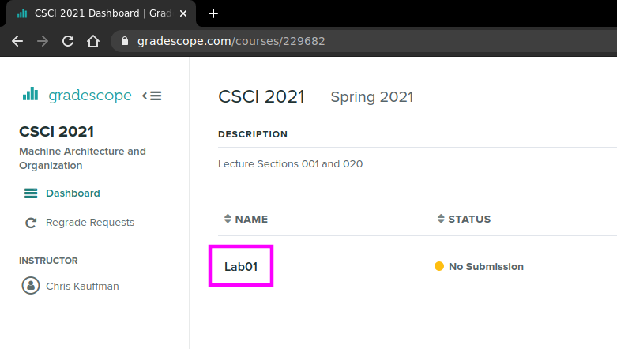

CMSC416 Assignment 2: Distributed Memory Programming with MPI
- Due: Wed 09-Mar by 11:59 pm
- Approximately 5.0% of total grade
- Submit to Gradescope
- You may work in groups of 1 to 3 and submit one assignment per group.
- Free Collaboration is allowed on assignments. See the Syllabus for details.
CODE DISTRIBUTION: a2-code.zip
CHANGELOG:
- Wed Feb 25 01:39:50 PM EST 2026
- Post 74 asked for guidance on how
to use SLURM /
sbatchand the providedheat-slurm.shscript to submit a batch job and get runtimes to fill in the table inA2-WRITEUP.txt. Guidance has been added to the assignment description for both the Heat and K-Means problems. - Wed Feb 25 11:18:48 AM EST 2026
Post 73 reported a typo in the assignment description mention the
mpiopts.shscript; this is not needed on Zaratan and has been removed from the assignment and description.That post also mentioned a problem running tests that is tied to the
test_post_filter.awkscript not having execute permissions, something that happens when unzipping/transferring files between systems. This can be corrected with by running either of>> chmod u+x test_post_filter.awk # manually correc the permission problem ## OR >> make update # update project files, adds above command to Makefile
- Tue Feb 24 05:49:34 PM EST 2026
- A link to the in-class K-means lecture has been corrected. The link previously led to a course I offered a long time ago at a university far, far away. We will have our discussion of K-Means in class on Thu 26-Feb and the link now directs folks to that week's lecture videos.
- Mon Feb 23 02:46:06 PM EST 2026
- The original version of the
A2-WRITEUP.txtfile mentioned the "mesabi" machine which should be "Zaratan" instead. Download a fresh version of it here if you have already started the assignment. A2-WRITEUP.txt
Table of Contents
- 1. Overview
- 2. Download Code and Setup
- 3.
A2-WRITEUP.txtWriteup File - 4.
mpi_hello.c: A Sample MPI Program - 5. MPI Jobs on Zaratan
- 6. Testing MPI Codes
- 7. Problem 1: MPI Heat
- 8. Problem 2: Serial K-Means Clustering
- 9. Problem 3: MPI K-Means Clustering
- 10. Work Disclosure in A2 Writeup
- 11. Project Submission on Gradescope
1 Overview
The assignment involves programming in MPI and describing the results of running your programs with several different parameter sets. It is a programming assignment so dust off your C skills. We have to spent some class discussing issues related to the assignment but it may be a good idea to review the lecture videos for when this took place earlier in the semester. It will pay to start early to get oriented as debugging parallel programs can be difficult and requires time.
There are 3 problems to solve.
- Parallelize the heat program from A1 using MPI
- Ensure your serial version of K-Means is intact.
- Parallelize K-Means clustering using MPI.
For all several of the problems, after finishing your code, you will need to run some timing experiments and describe the results in a short text file.
2 Download Code and Setup
Download the code pack linked at the top of the page. Unzip this which will create a project folder. Create new files in this folder. Ultimately you will re-zip this folder to submit it.
| File | State | Notes |
|---|---|---|
| ALL PROBLEMS | ||
A2-WRITEUP.txt |
EDIT | Fill in timing tables and write answers to discussion questions |
Makefile |
Provided | Build file to compile all programs |
testy |
Testing | Test running script |
test_mpi.supp |
Testing | Suppression file to get Valgrind to hide some library errors |
mpi_hello.c |
Provided | Demo MPI program along with debug printing function |
gradescope-submit |
Provided | Allows submission to Gradescope via make submit |
| DATA | ||
sample-mnist-data/ |
Directory | Created on running make test-setup or make test |
README.txt |
Provided | Description of data in directory |
digits_1x9_2e3.txt |
Provided | Sample data file of MNIST digit images in text format |
| PROBLEM 1 | ||
heat_mpi.c |
CREATE | Problem 1 parallel version of heat |
heat_serial.c |
Provided | Problem 1 serial version of the heat problem |
heat-slurm.sh |
Provided | Problem 2 script to generate timing for heat |
test_heat.org |
Testing | Problem 1 tests for heat program |
| PROBLEM 2 | ||
kmeans_serial.c |
CREATE | Problem 2 serial version of K-means clustering to write in C |
kmeans.py |
Provided | Problem 2 serial version of K-means clustering in Python |
test_kmeans_serial.org |
Testing | Problem 2 tests for K-means clustering |
| PROBLEM 3 | ||
kmeans_mpi.c |
CREATE | Problem 3 serial version of K-means clustering |
test_kmeans_mpi.org |
Testing | Problem 3 tests for K-means clustering |
3 A2-WRITEUP.txt Writeup File
Below is a blank copy of the writeup document included in the code pack. Fill in answers directly into this file as you complete your programs and submit it as part of your upload.
____________
A2 WRITEUP
____________
Problem 1: heat_mpi
===================
heat_mpi Timing Table
~~~~~~~~~~~~~~~~~~~~~
Fill in the following table on measuring the performance of your
`heat_mpi' program on Zaratan. Replace 00.00 entries with your actual
run times. You can use the provided `heat-slurm.sh' script to ease
this task. Submit it using `sbatch heat-slurm.sh' and extract the
lines marked `runtime:'.
-----------------------------
Width
Procs 6400 25600 102400
-----------------------------
1 00.00 00.00 00.00
2 00.00 00.00 00.00
4 00.00 00.00 00.00
8 00.00 00.00 00.00
10 00.00 00.00 00.00
16 00.00 00.00 00.00
32 00.00 00.00 00.00
64 00.00 00.00 00.00
128 00.00 00.00 00.00
-----------------------------
heat_mpi Discussion Questions
~~~~~~~~~~~~~~~~~~~~~~~~~~~~~
Analyze your table of results and answer the following questions.
1. Did using more processors result in speedups?
2. Describe any trends or anomalies you see in the timings and
speculate on their causes - e.g. was there are a steady increase in
runtimes, steady decrease, or jagged changes in timing?
3. Try to explain how number of processors and problem size seem to
affect runtimes/speedup in the problem.
Problem 2: kmeans_serial vs kmeans_mpi
======================================
Discuss how you chose to parallelize your serial version of K-means in
the program `kmeans_mpi.c'. Answer the following questions briefly.
1. How is the input and output data partitioned among the processors?
2. What communication is required throughout the algorithm?
3. Which MPI collective communication operations did you employ?
Problem 3: kmeans_mpi
=====================
kmeans_mpi Timing Table
~~~~~~~~~~~~~~~~~~~~~~~
Fill in the following table on measuring the performance of your
`kmeans_mpi' program on Zaratan. Replace 00.00 entries with your
actual run times. You can use the provided `kmeans-slurm.sh' script to
ease this task.
The columns are for each of 3 data files that are provided and run in
the job script.
digits_all_5e3.txt digits_all_1e4.txt
-------------------------------------------------------------------
Data File
Procs digits_all_5e3.txt digits_all_1e4.txt digits_all_3e4.txt
-------------------------------------------------------------------
1 00.00 00.00 00.00
2 00.00 00.00 00.00
4 00.00 00.00 00.00
8 00.00 00.00 00.00
10 00.00 00.00 00.00
16 00.00 00.00 00.00
32 00.00 00.00 00.00
64 00.00 00.00 00.00
128 00.00 00.00 00.00
-------------------------------------------------------------------
kmeans_mpi Discussion Questions
~~~~~~~~~~~~~~~~~~~~~~~~~~~~~~~
Analyze your table of results and answer the following questions.
1. Did using more processors result in speedups?
2. Describe any trends or anomalies you see in the timings and
speculate on their causes - e.g. was there are a steady increase in
runtimes, steady decrease, or jagged changes in timing?
3. Try to explain how number of processors and problem size seem to
affect runtimes/speedup in the problem.
Work Disclosure
===============
(A) *Human Collaborators:* Aside from the 1-2 people submitting this
assignment, the following people contributed ideas and discussion to
the completion of this work INCLUDING course staff members. (Write
NONE if no collaborators were involved.)
- Person 1 <person1@email.com> helped understand Problem X and the
meaning of ...
- Person 2 <person2@email.com> helped debug Cod for Problem Y...
- etc.
(B) *Resource Utilization:* The following resources such as websites,
course notes, artificial intelligence tools (LLMs/ChatBots/etc.) were
utilized in the completion of this work. Include course materials such
as textbooks and lecture slides as well. (Write NONE if no resources
were used [which would be hard to believe]).
- Resource 1 is here <https://some.resource.org/useful_stuff.html> and
provided help for Problem Z to understand ....
- Resource 2 is the book "Parallel Analysis" by Auth Or with chapter 8
helping a lot with Problem W
- Resource 3 is here <https://airegurgitator.com> and provided AI
refinements for the writing of problem Q and helped debug code for
Problem N.
- etc.
(C) *Ownership of Work*: I / We affirm that all parties listed below
have contributed to each solution presented in this document. All
parties are capable of describing how the solutions were derived, how
they apply to the problem, and that they were created in accordance
with the course's PRIME DIRECTIVE.
Signed,
TYPE NAME(S) OF SUBMITTERS
4 mpi_hello.c: A Sample MPI Program
A simple sample program called mpi_hello.c is provided as part of
the code distribution. This program includes a useful utility for
debugging purposes.
dprintf(fmt,...)is likeprintf()except that it only prints if the environment variableDEBUGis set and displays processor information in the prefixed with|DEBUG. This enables debugging messages to be printed during development but are disabled during normal runs.
Compiling and running the program can be done locally on any machine with MPI installed as follows.
>> mpirun -np 4 ./mpi_hello # run the code normally Hello world from process 0 of 4 (host: val) Hello from the root processor 0 of 4 (host: val) Hello world from process 2 of 4 (host: val) Hello world from process 1 of 4 (host: val) Hello world from process 3 of 4 (host: val) >> DEBUG=1 mpirun -np 4 ./mpi_hello # enable debug messages for this run Hello world from process 2 of 4 (host: val) Hello world from process 3 of 4 (host: val) Hello world from process 1 of 4 (host: val) |DEBUG Proc 002 / 4 PID 1484871 Host val| Debug message from processor 2 |DEBUG Proc 003 / 4 PID 1484872 Host val| Debug message from processor 3 |DEBUG Proc 001 / 4 PID 1484870 Host val| Debug message from processor 1 Hello world from process 0 of 4 (host: val) Hello from the root processor 0 of 4 (host: val) |DEBUG Proc 000 / 4 PID 1484869 Host val| Debug message from processor 0
Debug printing takes time and should be turned off when reporting
runtimes for programs. Using the shell commands below ensures that the
DEBUG environment variable is unset so debug printing is turned off
for further runs.
>> echo $DEBUG # check value of DEBUG env var 1 # currently defined >> unset DEBUG # unset it to remove it >> echo $DEBUG # now has no value >> mpirun -np 4 ./mpi_hello # this run has no debug output P 0: Hello world from process 0 of 4 (host: val) Hello from the root processor 0 of 4 (host: val) P 2: Hello world from process 2 of 4 (host: val) P 3: Hello world from process 3 of 4 (host: val) P 1: Hello world from process 1 of 4 (host: val)
NOTE: the dpprintf() function is somewhat inefficient even when
debug output is turned off as it requires calls to getenv(). There
are more efficient alternatives to this that involve macros but that
also involves recompiling code. Since this is a learning exercise we
can tolerate some performance hits in the name of easier debugging. In
the wild you may want to consider alternative debug printing
techniques.
5 MPI Jobs on Zaratan
UMD's Zaratan cluster has facilities to run parallel programs which we will use to evaluate our code. Jobs are handled in two ways
- Interactive Jobs which can be run on login nodes. SSH to a machine, compile your code and run it. You may use a limited number of processors for this but it is extremely useful while developing and testing. Login nodes are shared among all users logged in so performance numbers are unreliable (e.g. affected by other activity by other users).
- Batch Jobs which are submitted to a job queue to be run on via
the
sbatch job.shcommand. When a job is selected to be run, it is assigned to run exclusively on some compute nodes so that it may achieve reliable and maximal performance. This is where timing results will be reported.
Use the CMSC416 Setup Guide to configure your environment and access Zaratan.
5.1 Software Modules on Zaratan
Zaratan uses a software modules system to specify use of different
libraries and code packages. If you have followed the CMSC416 Setup
Guide then your shell will be configured to run some module load ...
commands to get access to compilers and programs for MPI. Generally
this will be something like
>> module load gcc/9.4.0 >> module load openmpi
So long as you see a path to a program for mpicc and mpirun, you
should be in shape:
profk@login-1 [~]% which mpicc /cvmfs/hpcsw.umd.edu/spack-software/2022.06.15/linux-rhel8-zen2/gcc-9.4.0/openmpi-4.1.1-hm2fkyfi7d5ggq4hg2xn4dtzf2o5r2rx/bin/mpicc profk@login-1 [~]% which mpirun /cvmfs/hpcsw.umd.edu/spack-software/2022.06.15/linux-rhel8-zen2/gcc-9.4.0/openmpi-4.1.1-hm2fkyfi7d5ggq4hg2xn4dtzf2o5r2rx/bin/mpirun
5.2 Batch Jobs on Zaratan
Use the sbatch job.sh command to submit a job to the SLURM job
queue. To ease timing evaluations, a job script with required
parameters has been provided for all of the problems. For instance,
for the Heat problem, submit using sbatch heat-slurm.sh. Checking
on the status of jobs in the queue is done via squeue -u
username. The provided scripts have the following properties:
Require you to change the directory of your code in it but otherwise do not need to be modified. Look for the line
# ADJUST: location of executable cd ~/a2-code/
in the script and change the target directory to wherever you have placed your code. Ensure it is compiled ahead of time.
- Require you to UNCOMMENT a section for either testing or a full run. It is recommended that folks start with a small run, inspect the results, then switch to a full run to get timing information.
- Scripts will run MPI jobs for the required programs on the required number of processors.
- Output for the job will be left in a file like
heat-slurm.sh.job-156425531.outwhich starts with the job script name Lines in the output that are marked
runtime:report wall clock time along with the problem parameters in it these appear likeruntime: procs 16 width 102400 realtime 5.15
and make it possible to use
grepor other tools to quickly fish out the lines reporting runtimes for construction of the results.- Scripts charge compute time to the CMSC416 class account via the
--accountoption to SLURM - The scripts have the correct MPI software module loaded at the
beginning of them and will call
mpirunon the program.
The session below demonstrates use of sbatch and squeue
profk@login-1 [a2-code]% sbatch heat-slurm.sh # submit script to run for heat jobs
Submitted batch job 156504577
profk@login-1 [a2-code]% squeue -u kauffman # check on the submitted jobs by user kauffman
JOBID PARTITION NAME USER ST TIME NODES NODELIST(REASON)
156504535 small kmeans-s kauffman PD 0:00 6 (Priority)
156504577 small heat-slu kauffman PD 0:00 6 (None)
# jobs are PD - Pending but not being run yet
# a useful command to "watch" the queue, press Ctl-c to kill the watch
profk@login-1 [a2-code]% watch 'squeue -u kauffman'
# later....
profk@login-1 [a2-code]% squeue -u kauffman # check on the submitted jobs by user kauffman
JOBID PARTITION NAME USER ST TIME NODES NODELIST(REASON)
profk@login-1 [a2-code]% # no jobs listed, all jobs done with results
profk@login-1 [a2-code]% ls *156504577* # check for output job
heat-slurm.sh.job-156504577.out
6 Testing MPI Codes
6.1 On Zaratan Machines
Testing out codes on Zaratan machines is ideal as it is the same
environment as what the timing evaluation will involve. The same
commands can be used (load MPI module, compile, run with mpirun -np
4), with the minor limitation that you should not run interactively
with more than 16 processors.
6.2 On Home Machines
Setting up a home MPI installation is another option. In most cases a
Linux or Unix system can install OpenMPI with a package manager and by
using mpirun --oversubscribe one can test on a number of processors
larger than available as physical cores on the system. Do not expect
speedup in these cases but it is extremely useful for debugging.
7 Problem 1: MPI Heat
7.1 The Heat Problem
A slightly modified version of the heat propagation simulation from
Assignment 1 and in-class discussion is in the code pack and called
heat_serial.c. This program can be compiled and run with the
provided Makefile as follows.
>> make heat_serial # build program gcc -g -Wall -o heat_serial heat_serial.c >> ./heat_serial # run with no args to show help info usage: ./heat_serial max_time width print max_time: int width: int print: 1 print output, 0 no printing >> ./heat_serial 10 8 1 # run for 10 timesteps with 8 "elements" | 0 1 2 3 4 5 6 7 ---+------------------------------------------------- 0| 20.0 50.0 50.0 50.0 50.0 50.0 50.0 10.0 1| 20.0 35.0 50.0 50.0 50.0 50.0 30.0 10.0 2| 20.0 35.0 42.5 50.0 50.0 40.0 30.0 10.0 3| 20.0 31.2 42.5 46.2 45.0 40.0 25.0 10.0 4| 20.0 31.2 38.8 43.8 43.1 35.0 25.0 10.0 5| 20.0 29.4 37.5 40.9 39.4 34.1 22.5 10.0 6| 20.0 28.8 35.2 38.4 37.5 30.9 22.0 10.0 7| 20.0 27.6 33.6 36.3 34.7 29.8 20.5 10.0 8| 20.0 26.8 32.0 34.1 33.0 27.6 19.9 10.0 9| 20.0 26.0 30.5 32.5 30.9 26.5 18.8 10.0 >> ./heat_serial 10 8 0 # same run but don't print output, useful for timing as output takes a while >> ./heat_serial 12 5 1 # run for 12 timesteps with 5 columns / elements | 0 1 2 3 4 ---+------------------------------- 0| 20.0 50.0 50.0 50.0 10.0 1| 20.0 35.0 50.0 30.0 10.0 2| 20.0 35.0 32.5 30.0 10.0 3| 20.0 26.2 32.5 21.2 10.0 4| 20.0 26.2 23.8 21.2 10.0 5| 20.0 21.9 23.8 16.9 10.0 6| 20.0 21.9 19.4 16.9 10.0 7| 20.0 19.7 19.4 14.7 10.0 8| 20.0 19.7 17.2 14.7 10.0 9| 20.0 18.6 17.2 13.6 10.0 10| 20.0 18.6 16.1 13.6 10.0 11| 20.0 18.0 16.1 13.0 10.0
7.2 MPI Heat
The central task of this problem is to create an MPI version of this
program named heat_mpi which performs the same task but uses MPI
calls to perform the heat calculations on distributed memory
machines. Once completed, this program can be run as follows.
>> make heat_mpi # build MPI version of heat program mpicc -g -Wall -o heat_mpi heat_mpi.c >> mpirun -np 2 ./heat_mpi 10 8 1 # run using 2 procs, 10 steps, 8 elements = 4 per proc | 0 1 2 3 4 5 6 7 ---+------------------------------------------------- 0| 20.0 50.0 50.0 50.0 50.0 50.0 50.0 10.0 1| 20.0 35.0 50.0 50.0 50.0 50.0 30.0 10.0 2| 20.0 35.0 42.5 50.0 50.0 40.0 30.0 10.0 3| 20.0 31.2 42.5 46.2 45.0 40.0 25.0 10.0 4| 20.0 31.2 38.8 43.8 43.1 35.0 25.0 10.0 5| 20.0 29.4 37.5 40.9 39.4 34.1 22.5 10.0 6| 20.0 28.8 35.2 38.4 37.5 30.9 22.0 10.0 7| 20.0 27.6 33.6 36.3 34.7 29.8 20.5 10.0 8| 20.0 26.8 32.0 34.1 33.0 27.6 19.9 10.0 9| 20.0 26.0 30.5 32.5 30.9 26.5 18.8 10.0 >> mpirun -np 4 ./heat_mpi 6 12 1 # run using 4 procs, 6 steps, 12 elements = 3 per proc | 0 1 2 3 4 5 6 7 8 9 10 11 ---+------------------------------------------------------------------------- 0| 20.0 50.0 50.0 50.0 50.0 50.0 50.0 50.0 50.0 50.0 50.0 10.0 1| 20.0 35.0 50.0 50.0 50.0 50.0 50.0 50.0 50.0 50.0 30.0 10.0 2| 20.0 35.0 42.5 50.0 50.0 50.0 50.0 50.0 50.0 40.0 30.0 10.0 3| 20.0 31.2 42.5 46.2 50.0 50.0 50.0 50.0 45.0 40.0 25.0 10.0 4| 20.0 31.2 38.8 46.2 48.1 50.0 50.0 47.5 45.0 35.0 25.0 10.0 5| 20.0 29.4 38.8 43.4 48.1 49.1 48.8 47.5 41.2 35.0 22.5 10.0 >> time mpirun -np 4 ./heat_mpi 6 12 0 # same as above but suppress output and time the run real 0m0.168s # wall clock time to report for the run user 0m0.102s sys 0m0.073s
7.3 Features of heat_mpi
- Name your program
heat_mpi.cto be compatible with the providedMakefile. It has a target to build bothheat_serialandheat_mpiif you name the source fileheat_mpi.c. The serial version of the program provided accepts 3 command line arguments:
- Number of time steps (rows in output)
- Width of the rod in elements (columns of output)
- 1 or 0 to indicate whether final output should be printed or suppressed.
The MPI version should allow for the same arguments so that runs like the following will work.
>> mpirun -np 4 ./heat_mpit 10 40 1 # 4 procs, 10 timesteps, width 40, show output ... # output for the run >> mpirun -np 4 ./heat_mpi 10 40 0 # same but no output >>
- Divide the problem data so that each processor owns only a portion of the columns of the heat matrix as discussed in class.
- Utilize send and receives or the combined
MPI_Sendrecvto allow processors to communicate with neighbors. - Utilize a collective communication operation at the end of the computation to gather all results on Processor 0 and have it print out the entire results matrix if command line args indicate this is necessary.
- Verify that the output of your MPI version is identical to the output of the serial version which is provided. There are a series of automated tests that help with this which are described later.
- To be compatible with the automated tests,
heat_mpimust produce an exit code of 0; e.g.return 0at the end ofmain()as is done inheat_serial.c. Your MPI version is only required to work correctly in the following situations:
- The width of the rod in elements is evenly divisible by the number of processors being run.
- The width of the rod is at least three times the number of processors so that each processor would have at least 3 columns associated with it.
That means the following configurations should work or fail as indicated.
#Procs Width Works? Notes 1 1 no not enough cols 1 2 no not enough cols 1 3 yes take special care for 1 proc 4 4 no only 1 column per proc 4 8 no only 2 columns per proc 4 12 yes at least 3 cols per proc 4 16 yes at least 3 cols per proc 4 15 no uneven cols 3 9 yes 3 cols per proc, evenly divisible 4 40 yes evenly divisible, >= 3 cols per proc Runs that are marked with "no" in the "Works?" column will not be tested so are free to do anything (segfault, work correctly, print an error and exit immediately, etc.).
7.4 Written Summary of the heat_mpi Results
Included with the project code is the file A2-WRITEUP.txt which has
a timing table to fill in and a few discussion questions which should
be answered.
Time your runs on Zaratan. You can SSH to it via ssh
MyID@login.zaratan.umd.edu. Gathering data for the timing table is
eased via the provided heat-slurm.sh job script which will run jobs
with each of the parameters in the timing table listed.
- Edit the
heat-slurm.shfile and uncomment theSmallorFULLparameter sections; Small will run relatively fast and is good for testing things out; FULL generates all data needed for the provided table After saving
heat-slurm.shsubmit it for a batch run via>> sbatch heat-slurm.sh
- Monitor the progress the batch job using
squeue -u $USER - Output will be in a file like
heat-slurm.sh.job-18095231.outwith the number reflecting the batch job number - Lines marked
runtime:contain parameters and real runtime to report
7.5 Automated Tests for heat_mpi
A battery of automated tests are provided to evaluate whether
heat_mpi is producing correct results on some small examples. These
are present in the file test_heat.org and are run via the testy
script. This can be done manually or via make test-prob1. Compliant
programs will give results that look like the following.
>> unset DEBUG # enusre that DEBUG output is disabled >> make test-prob1 # build prob1 program and run tests mpicc -g -Wall -o heat_mpi heat_mpi.c ./testy test_heat.org ============================================================ == testy test_heat.org == Running 10 / 10 tests 1) Procs=1 Width=20 : ok 2) Procs=1 Width=20 Valgrind : ok 3) Procs=2 Width=20 : ok 4) Procs=2 Width=20 Valgrind : ok 5) Procs=2 Width=20 No output : ok 6) Procs=2 Width=6 : ok 7) Procs=2 Width=6 Valgrind : ok 8) Procs=4 Width=20 : ok 9) Procs=4 Width=20 Valgrind : ok 10) Procs=4 Steps=30 Width=40 : ok ============================================================ RESULTS: 10 / 10 tests passed
Failed tests will provide a results file with information that can be studied to gain insight into detected problems with the programs.
Tests are limited to 4 processors max. Some tests run codes under Valgrind to detect memory problems and help diagnose segmentation faults.
7.6 Grading Criteria for Problem 1 grading 35
| CRITERIA | |
|---|---|
| 10 | Code compiles via make prob1 and passes automated tests via make test-prob1 |
| 5 | Cleanly written code with good documentation according to a Manual Inspection |
| 10 | Written report includes timings table described above |
| 10 | Written report includes answers to discussion questions written above. |
8 Problem 2: Serial K-Means Clustering
Assignment 1 introduced the K-Means clustering algorithm and provided a Python. If you did not finish your C port of this program, do so now as the MPI version should be based upon it.
Make sure to name your program kmeans_serial.c to be compatible with
the Makefile provided in the codepack.
Some automated tests are provided for the serial program which check that the output produced by the program and the clusters it generates match expectations. The tests also evaluate whether there any memory problems with the program.
9 Problem 3: MPI K-Means Clustering
Implement parallel version of the K-means algorithm for distributed
memory using MPI calls. Name your program kmeans_mpi.c to be
compatible with the provided Makefile. We have discussed the basic
strategy for parallelizing the code during lecture on Thu 16-Feb so
review the discussion present there if you need guidance.
9.1 Implementation Requirements
kmeans_mpiwill accept the same command line arguments as the Serial version. As all MPI programs, it will be launched viampirunsuch as inmpirun -np 4 kmeans_mpi mnist-data/digits_all_1e2.txt 10 outdir1
- The behavior and output of the MPI version will match the serial version in format; e.g. printed messages and produced output files.
All I/O will be performed only by the root processor. Only the root Processor 0 will read the data file specified for the program. It will send required information to other processors that are needed by them to contribute to the communication. At the end of the computation, the root processor will be sent all cluster assignments and cluster centers to be written to files by the root processor.
This requirement is for learning purposes only: in a production setting, one would look to have each processor perform I/O operations in parallel if the system supported it. Such parallel I/O would be facilitated by a binary storage format rather than our text-based version. However, this assignment is designed to gain practice using MPI calls and distributing data then accumulating presents a good opportunity for this.
- The algorithm implemented in the MPI version will follow an input partitioning approach as was discussed in lecture. Other possibilities exist but input partitioning is the most likely to be generally useful and lead to speedups.
Implementation Notes
- As before, follow the general flow provided in the Python implementation. The MPI version should produce identical results and hopefully faster.
- In our Thu Feb-26 lecture we will discuss how to implement K-Means clustering for distributed memory machines. It may be worthwhile to review this discussion as it lays out some information of data distribution and communication required.
9.2 Grading Criteria for Problem 3 grading 45
Test cases are provided for the MPI version of K-Means and can be run
via make test-prob3.
Timings for the required timing table in A2-WRITEUP.org can be
generated via the provided scripts.
- Edit the
kmeans-slurm.shfile and uncomment theSmallorFULLparameter sections; Small will run relatively fast and is good for testing things out; FULL generates all data needed for the provided table After saving
kmeans-slurm.shsubmit it for a batch run via>> sbatch kmeans-slurm.sh
- Monitor the progress the batch job using
squeue -u $USER - Output will be in a file like
kmeans-slurm.sh.job-18095231.outwith the number reflecting the batch job number - Lines marked
runtime:contain parameters and real runtime to report
| CRITERIA | |
|---|---|
| 20 | Passes compiles and runs automated tests via make test-prob3 |
| 5 | Cleanly written code with good documentation and demonstrates appropriate use of |
| MPI function calls to implement the algorithm such as Broadcast, Scatter, Reduce, Gather, etc. | |
| 5 | Code handles data size that is not evenly divided by the number of processors by using appropriate |
"vector" versions of MPI calls like MPI_Scatterv() |
|
| 5 | Written report includes timings table described above |
| 10 | Written report includes answers to discussion questions written above. |
10 Work Disclosure in A2 Writeup
The end of the A2-WRITEUP.txt document includes the same Work
Disclosure that was part of A1:
- (A) Human Collaborators
- (B) Resource Utilization
- (C) Ownership of Work
Complete each section of the Work Disclosure to avoid penalties.
11 Project Submission on Gradescope
Submit to Gradescope, typically by typing the command make submit
where your assignment code is stored. Specific
NOTE 2:
11.1 Submitting via the Command Line (RECOMMENDED)
Labs and Projects can be submitted to Gradescope via the command line using the command:
>> make submit
This will create a a2-complete.zip Zip file and upload it to
Gradescope using the gradescope-submit script. After uploading the
code, a brief version of the Autograder results will be shown for the
test cases which should be checked to ensure that they match
expectations. The tests that run on Gradescope are identical to those
that run normally via make test (no hidden / secret tests) and it is
intended that test results on Zaratan match those on Gradescope (though
occasional discrepancies arise).
Students are responsible for verifying Autograder results match behavior on Zaratan, making efforts to fix submissions, and contacting staff about Autograder problems. If things don't look right in the terminal, pop open a web browser and check the Autograder output via the "submission link" that is printed during the submission (or just navigate to the assignment on Gradescope).
Below is a transcript of a successful submission via make submit.
>> make submit # submit assignment to gradescope rm -f mpi_hello heat_serial heat_mpi kmeans_serial kmeans_mpi *.o vgcore.* rm -rf test-results rm -f a2-complete.zip cd .. && zip "solution-a2-416/a2-complete.zip" -r "solution-a2-416" --exclude \*/sample-mnist-data/\* adding: solution-a2-416/ (stored 0%) adding: solution-a2-416/kmeans_solution.c (deflated 68%) ... Zip created in a2-complete.zip # zip file which will be sent; also used in manual submission === SUBMITTING TO GRADESCOPE === # script gradescope-submit used to upload to gradescope ./gradescope-submit 1239306 7678696 a2-complete.zip Submitting zipfile a2-complete.zip with 153 files ==Gradscope Login Credentials== email: profk@umd.edu password: Contacting Gradescope - https://www.gradescope.com OK (200) - https://www.gradescope.com/login OK (200) - https://www.gradescope.com/courses/1239306/assignments/7678696 OK (200) - https://www.gradescope.com/courses/1239306/assignments/7678696/submissions OK (200) - https://www.gradescope.com/courses/1239306/assignments/7678696/submissions/392045302 submission link Submit Successful # copy this link to view submission in a browser Monitoring Autograder Progress - unprocessed - autograder_task_started - autograder_harness_started - processed Autograder Results - Problem 1: 10.0 / 10.0 - Problem 2: 5.0 / 5.0 - Problem 3: 20.0 / 20.0 # autograder indicates all tests passed
11.2 Creating a Zip and Submitting Manually
Submitting via the command line is faster and more reliable than the method described here. Use manual submission only as a last resort.
If submission from the command line fails for some reason, students
can also submit their completed zip file manually via a web
browser. Create a zip file via make zip. Instructions below are for
a different class; adjust the class and assignment name to that
which applies to in your case.
>> make zip rm -f hello_c *.o rm -rf test-results rm -f lab01-complete.zip cd .. && zip "lab01-code/lab01-complete.zip" -r "lab01-code" adding: lab01-code/ (stored 0%) adding: lab01-code/QUESTIONS.md5 (stored 0%) adding: lab01-code/QUESTIONS.txt (deflated 61%) adding: lab01-code/QUESTIONS.txt.bk (deflated 61%) adding: lab01-code/testy (deflated 73%) adding: lab01-code/hello_c.c (deflated 51%) adding: lab01-code/Makefile (deflated 60%) adding: lab01-code/test_lab01.org (deflated 47%) Zip created in lab01-complete.zip
Then transfer the zip file lab01-complete.zip to the local machine
(laptop) and upload it to Gradescope under the Lab01
assignment. Make sure to wait around to see the Autograder results
as if something goes wrong, students will want to address it to secure
their lab credit (about 1% of their overall grade).
The following pictures illustrate how to submit the code via the web browser; the names will vary a bit as the pictures are associated with a different course that occurred a long, long time ago in a university far, far away. However, likely most students will get the gist of uploading a zip.




11.3 Adding Group Members
If you are working in a group only one student needs to submit and can then add other group members up to the limit.
The following pictures show where you can add group members on Gradescope AFTER submitting.


11.4 Late Policies
As described in the Course Syllabus, late submissions are penalized as follows.
- On-time submissions receive no penalties
- Submitting 1-24 hours will result in the loss of 10% absolute credit
- Submitting 25-48 hours late will result in the loss 20% absolute credit
- No submissions will be accepted more than 48 hours after a deadline.